An end-to-end lakehouse on Databricks Community Edition — built 100% free. Real 100,000-order e-commerce data flows through a medallion architecture on Delta Lake: idempotent batch ingestion, Auto Loader streaming, star-schema analytics, and cost-aware partitioning.
ShopStream is a production-style pipeline on the Brazilian E-Commerce by Olist dataset (real anonymized marketplace data, 2016–2018, 9 tables). It follows the medallion pattern every modern data team uses: an immutable bronze landing zone, a validated and deduplicated silver layer, and a business-ready gold star schema — unified with declarative Delta Live Tables logic and served through analytical SQL.
Batch + exactly-once streaming into Delta.
Raw as-is, all strings, fully traceable.
Deduped, typed, partitioned by month.
Star schema + metrics, analytics-ready.
The Olist reviews file ships with ~1,205 duplicated review_ids. Bronze preserved them as-is; Silver deduplicated on the business key — a textbook medallion responsibility.
One line item had no order_id. A referential-integrity check (NULL-safe LEFT JOIN) caught it, and the Gold fact layer's inner join keeps it out of the business models.
A NOT IN subquery silently returned nothing for NULL keys, while the LEFT JOIN found the real row. Documented the semantics — worth an interview story on its own.
Cancelled / unavailable orders legitimately exist with zero items. Verified, not "fixed" — the pipeline documents reality instead of hiding it.
Every claim above was verified in Databricks, not assumed — screenshots from the actual run: the exactly-once streaming proof, the silver dedupe checks, and the gold star-schema queries.
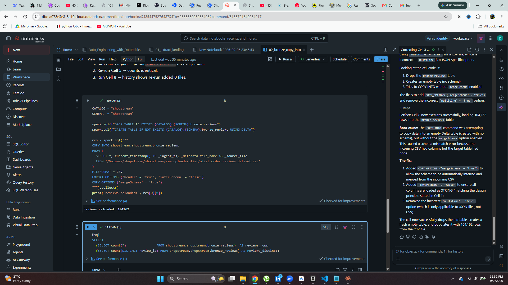
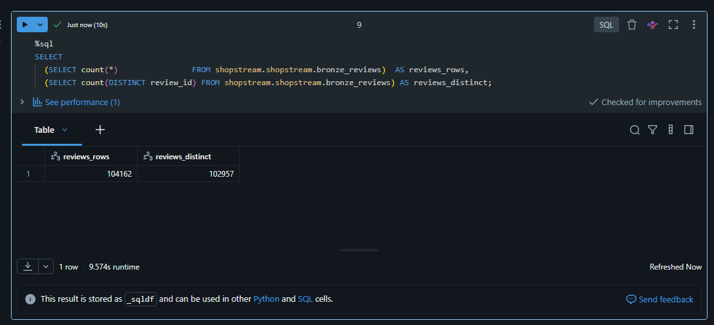
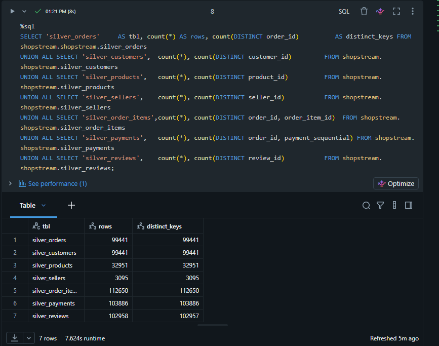
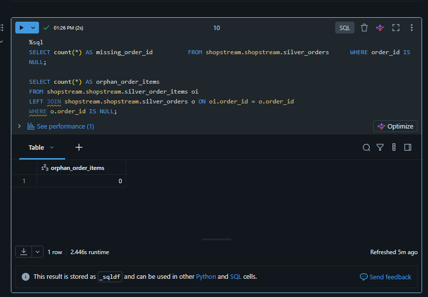
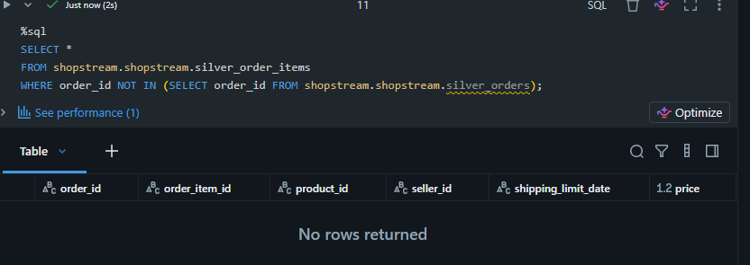
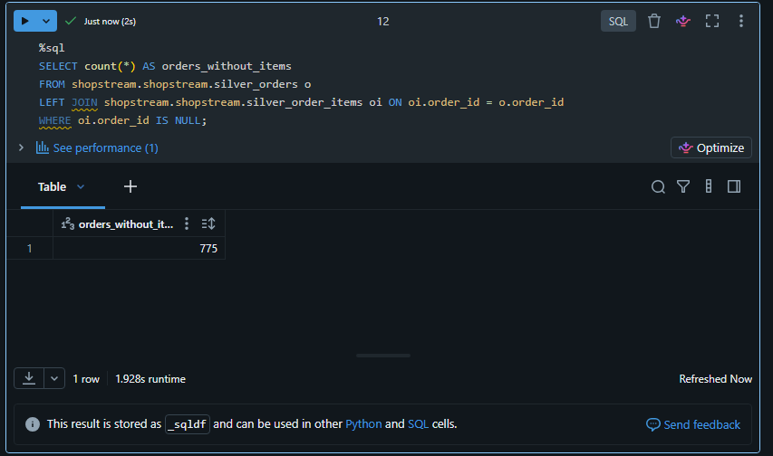
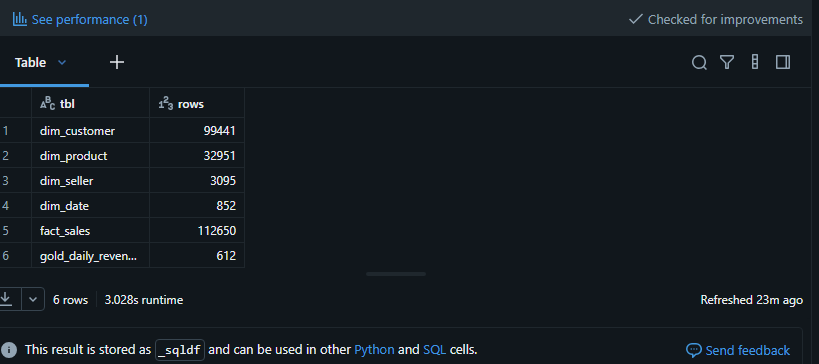
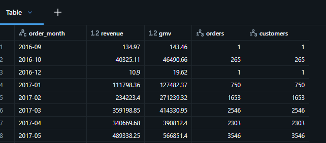
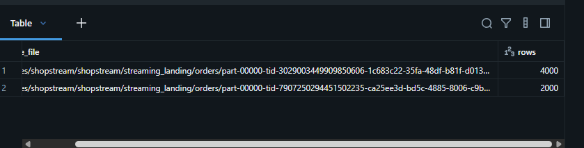
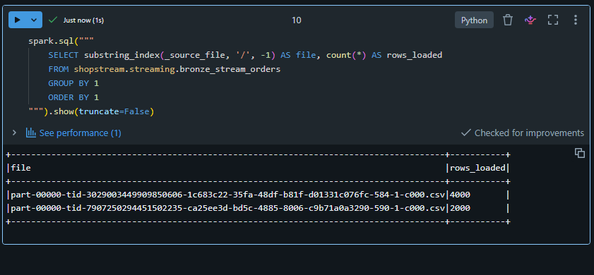
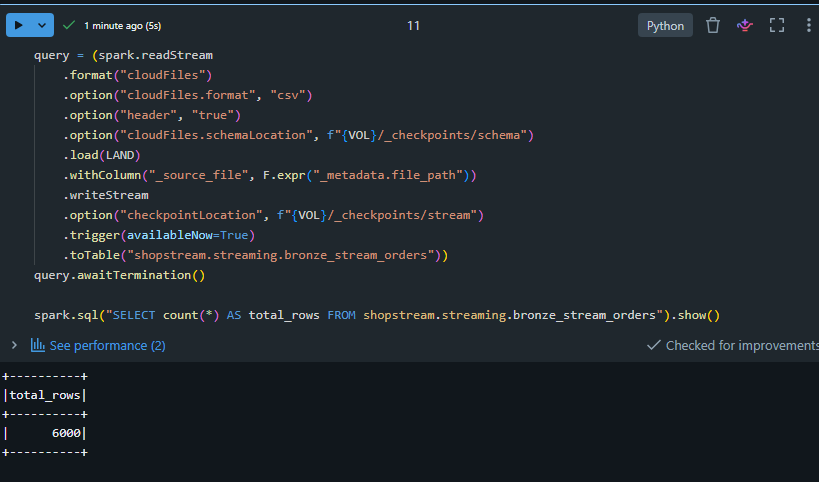